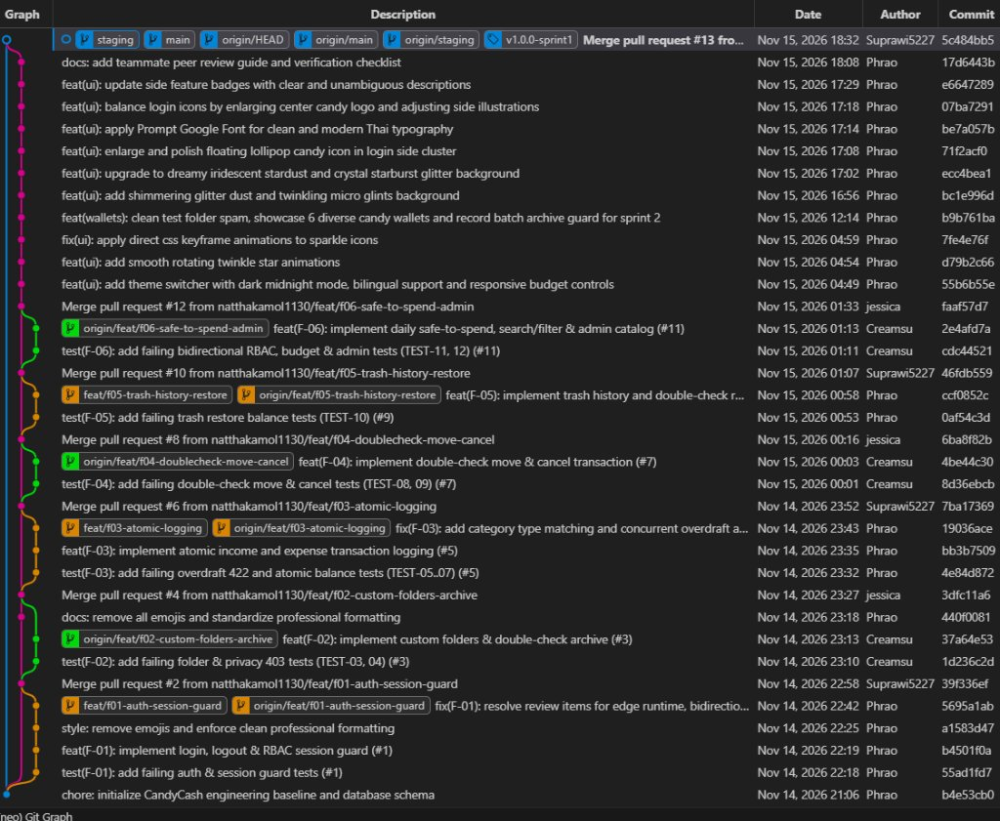
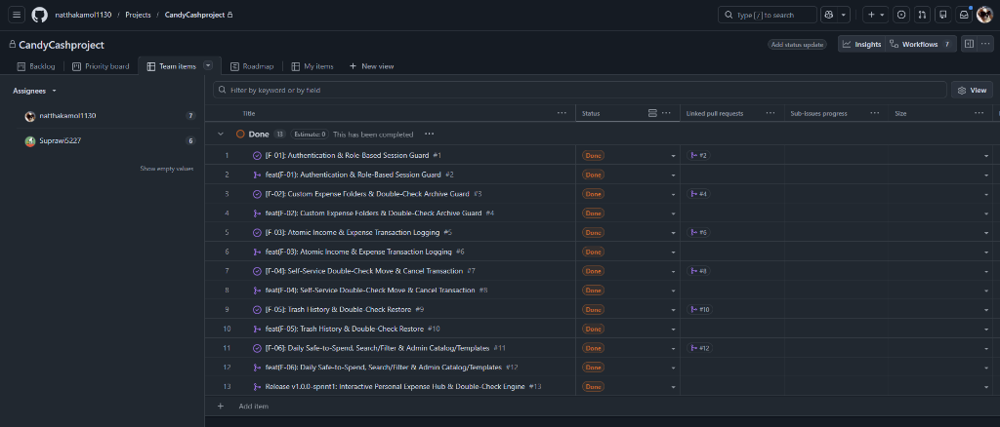

รายงานสรุปการส่งมอบงาน Deliverable 1: การวางรากฐานทางวิศวกรรมซอฟต์แวร์ และการปล่อย Release v1.0.0-sprint1 สำหรับระบบบันทึกรายรับ-รายจ่ายส่วนตัวโทนพาสเทลน่ารัก
| หัวข้อการตรวจสอบ | คำสั่ง / แหล่งอ้างอิง | ผลลัพธ์การทดสอบ | สถานะ |
|---|---|---|---|
| Automated Test Suite (TDD) | npm test (Vitest 2.1.9) |
52 passed (52 tests across 6 suites in 2.37s) | Passed 100% |
| TypeScript Strict Typecheck | npx tsc --noEmit |
0 type errors across all API routes, services & UI | 0 Error |
| Role Alternating Peer Review | docs/teammate-2-guide.md |
สลับบทบาทตรวจทาน 6 Feature PRs + 1 Release PR | Verified |
| Git Flow & Branching Baseline | main and staging branches |
กิ่งสาขาแยกอิสระ ซิงค์ตรงกันสมบูรณ์ที่ 5c484bb |
Synchronized |
CandyCash เป็นระบบบันทึกและบริหารรายรับ-รายจ่ายส่วนตัวอัจฉริยะ ออกแบบมาเพื่อจำลองกระเป๋าเงินเสมือนจริงสำหรับบริหารสภาพคล่องทางการเงินโดยไม่เชื่อมโยงกับธนาคารจริง เพื่อความปลอดภัย 100% ของข้อมูลผู้ใช้งาน โดยมีแกนหลักด้านวิศวกรรมซอฟต์แวร์ดังนี้:
| องค์ประกอบระบบ | เทคโนโลยีที่เลือกใช้ | เหตุผลและการออกแบบเชิงวิศวกรรม |
|---|---|---|
| Web Framework | Next.js 14 App Router (React 18) | Server Components ผสาน Client Components และ Route Handlers รวดเร็วและปลอดภัย |
| Database & ORM | Prisma ORM 5 + SQLite / PostgreSQL | Schema Type-Safe, รองรับ Interactive Transactions ป้องกัน Race Condition และยอดเงินติดลบ |
| Security & Auth | bcryptjs + JWT HttpOnly Cookie | จัดเก็บเซสชันในคุกกี้ที่ไม่สามารถถูกสคริปต์ภายนอกขโมยได้ (XSS Prevention) |
| Typography & Theme | Prompt (Google Font) + Tailwind CSS | ฟอนต์ภาษาไทยทรงโค้งมน เรียบร้อย สระวรรณยุกต์ไม่ซ้อนทับ รองรับโหมดสว่างและโหมดกลางคืน |
ระบบ CandyCash แบ่งการดำเนินงานออกเป็น 3 สปรินต์ตามแผนงาน 6 + 3 + 3 อย่างเป็นระเบียบ ดังนี้:
GET /api/auth/me และกั้นสิทธิ์สองทาง (USER เข้าหน้า Admin ได้ 403, ผู้ไม่ล็อกอินได้ 401)
| รหัสกฎ | ชื่อกฎธุรกิจ | มาตรการป้องกันและพฤติกรรมของระบบ | รหัสสถานะ |
|---|---|---|---|
| BR-01 | Monetary & Category Match | ยอดเงินต้องมากกว่า 0 และประเภทธุรกรรมต้องตรงกับประเภทหมวดหมู่ | 422 Unprocessable |
| BR-02 | Strict Zero Overdraft Guard | ล็อกห้ามจ่ายเกินยอดเงินคงเหลือในโฟลเดอร์ ป้องกัน Race Condition ด้วย Atomic Transaction | 422 Unprocessable |
| BR-03 | Bidirectional RBAC & Privacy | USER ดูได้เฉพาะโฟลเดอร์ตนเอง และ ADMIN ถูกบล็อกไม่ให้เปิดดูข้อมูลเงินของ USER | 403 Forbidden |
| BR-04 | Double-Check Move Balance | การย้ายรายการต้องส่ง confirmed: true และตรวจทานยอดเงินทั้งสองโฟลเดอร์ไม่ให้ติดลบ |
400 / 422 |
| BR-05 | Double-Check Cancel & Restore | การยกเลิกหรือกู้คืนรายการต้องยืนยันสองชั้น และห้ามกู้คืนรายจ่ายหากยอดเงินไม่พอตัด | 409 / 422 |
| BR-06 | Double-Check Archive Guard | โฟลเดอร์ที่มีประวัติรายการเงินห้ามลบเด็ดขาด ต้องใช้การจัดเก็บเข้ากรุเพื่อคงประวัติบัญชี | 400 Bad Request |
| BR-07 | Transfer Separation Rule | การโอนเงินข้ามโฟลเดอร์และการออมเงิน ไม่นับเป็นรายจ่ายสิ้นเปลืองในงบประมาณ | Sprint 2 Logic |
| BR-08 | Closed Fiscal Immutability | ไม่อนุญาตให้แก้ไข ย้าย หรือกู้คืนรายการในเดือนที่ปิดงวดบัญชีไปแล้ว | 422 Period Closed |
| BR-09 | Folder PIN Spending Lock | โฟลเดอร์ที่ตั้งค่าล็อกด้วยรหัส PIN จะไม่อนุญาตให้ถอนหรือใช้จ่ายจนกว่าจะใส่ PIN ถูกต้อง | 403 PIN Required |
| BR-10 | Batch Archive Itemized Guard | การจัดเก็บหลายโฟลเดอร์พร้อมกัน ต้องแสดงหน้าต่างสรุปทบทวนรายชื่อทุกโฟลเดอร์และยอดเงินรวม | 400 Confirmation Req |
ทุกฟีเจอร์ของระบบได้รับการพัฒนาตามระเบียบวิธี Test-Driven Development (TDD) อย่างเคร่งครัด โดยเริ่มจากการเขียนชุดทดสอบที่ล้มเหลวก่อน (Red Commit) จากนั้นจึงเขียน Implementation เพื่อให้ผ่านการทดสอบ (Green Commit)
| ฟีเจอร์ | Red Commit (Test First) | Green Commit (Feature Implementation) | จำนวนการทดสอบ | สถานะ |
|---|---|---|---|---|
| F-01 Authentication Guard | 55ad1fd test(F-01) |
b4501f0 feat(F-01) |
9 tests | Passed 9/9 |
| F-02 Custom Folders & Archive | 1d236c2 test(F-02) |
37a64e5 feat(F-02) |
9 tests | Passed 9/9 |
| F-03 Atomic Logging & Overdraft | 4e84d87 test(F-03) |
bb3b750 feat(F-03) |
8 tests | Passed 8/8 |
| F-04 Double-Check Move & Cancel | 8d36ebc test(F-04) |
4be44c3 feat(F-04) |
9 tests | Passed 9/9 |
| F-05 Trash History & Restore | 0af54c3 test(F-05) |
ccf0852 feat(F-05) |
8 tests | Passed 8/8 |
| F-06 Safe-to-Spend & Admin Catalog | cdc4452 test(F-06) |
2e4afd7 feat(F-06) |
9 tests | Passed 9/9 |
ทีมงานได้แบ่งงานและสลับบทบาทระหว่าง Author และ Reviewer ในแต่ละ Feature Pull Request อย่างเคร่งครัด พร้อมทั้งผ่านการ Merge เข้าสู่สาขา main อย่างเป็นทางการใน Release PR #13


| Issue / PR | ชื่อฟีเจอร์ | ผู้พัฒนา (Author) | ผู้ตรวจทาน (Reviewer) | สถานะ PR บน GitHub |
|---|---|---|---|---|
| Issue #1 / PR #2 | F-01 Authentication Guard | @natthakamol1130 | @suprawi5227 | Approved & Merged |
| Issue #3 / PR #4 | F-02 Custom Folders & Archive | @suprawi5227 | @natthakamol1130 | Approved & Merged |
| Issue #5 / PR #6 | F-03 Atomic Logging & Overdraft | @natthakamol1130 | @suprawi5227 | Approved & Merged |
| Issue #7 / PR #8 | F-04 Move & Cancel Transaction | @suprawi5227 | @natthakamol1130 | Approved & Merged |
| Issue #9 / PR #10 | F-05 Trash History & Restore | @natthakamol1130 | @suprawi5227 | Approved & Merged |
| Issue #11 / PR #12 | F-06 Safe-to-Spend & Admin | @suprawi5227 | @natthakamol1130 | Approved & Merged |
| Release PR #13 | Sprint 1 Release (staging -> main) | @natthakamol1130 | @suprawi5227 | Merged by Teammate |
CandyCash ได้รับการปรับแต่งรูปลักษณ์ให้มีความโดดเด่น น่ารัก และใช้งานง่าย เพื่อส่งเสริมให้ผู้ใช้สนุกสนานกับการบันทึกรายรับ-รายจ่าย:
ติดตั้งฟอนต์ Prompt รองรับภาษาไทยและอังกฤษ มีความโค้งมน สะอาดตา สระและวรรณยุกต์จัดวางเป็นระเบียบ ไม่ซ้อนทับหรือแข็งทื่อเหมือนฟอนต์ระบบเดิม
สลับได้ทั้ง Light Mode พาสเทลสดใส และ Dark Midnight Mode หรูหรา สบายตา พร้อมบันทึกสถานะผ่าน LocalStorage
พื้นหลังออโรร่าพาสเทล เลเยอร์ประกายกลิตเตอร์ละเอียด และดวงดาวหมุน 360 องศา ให้ความรู้สึกลื่นไหลและมีชีวิตชีวา
ขยายโลโก้ตรงกลางเป็น 72px (ไอคอน 46px) ปรับโหลลูกกวาดและอมยิ้มด้านข้างเป็น 48px พร้อมข้อความคำอธิบายกระชับ ตรงประเด็น และไม่กำกวม